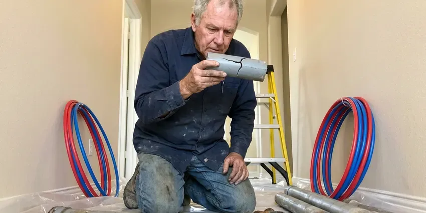

Gas Line Repair in St. Paul, MN
Your gas system should hold pressure with no drop. CNV Plumbing gets it back to that point for homes in St. Paul, MN.
- Licensed Gas Line Plumbers
- Tested Before We Leave
- Pressure Tested to Code
- Certified Gas Technicians

Need Gas Line Repair? Call Now in St. Paul, MN.
CNV Plumbing handles the inspection and the permit so your gas comes back on sooner.
Safe Gas Line Repair for Your Home in St. Paul, MN
CNV Plumbing works on all the common gas pipe materials in Minnesota, including threaded black iron, coated steel, CSST and buried polyethylene. They fail in different ways. Threaded joints on black iron loosen, CSST gets nicked by nails or damaged by lightning, and buried steel corrodes wherever the wrap has failed. Knowing which one you have speeds up the repair.
Some of what we do:
- Appliance shutoff valve and connector upgrades
- Natural gas and propane line repair
- Gas line reroutes for remodels

Additional Plumbing Maintenance Services in St. Paul, MN
Our maintenance and specialty plumbing services in St. Paul, MN protect your home year-round and extend the life of every system.


Customers
Why Choose CNV Plumbing for Gas Line Repair in St. Paul, MN?
Our gas line repairs carry a written warranty on parts and labor. We use approved fittings and gas-rated thread sealant. On CSST we use the manufacturer's own fittings, because mixing brands on corrugated tubing can void the listing and create a leak point that will not show up until later.
- Leak Pinpointing, Electronic detectors and soap solution narrow the leak to one joint, which keeps the repair small.
- Safety First, We follow the fuel gas code adopted in Minnesota and test every repair before restoring gas.
- Quick Response, Gas outages mean no heat or hot water, so we answer fast and schedule the same day when we can.
Citywide Coverage
We repair gas lines in every neighborhood of St. Paul, from older homes with buried steel yard lines to newer builds with CSST in the attic. Our trucks carry pipe, fittings and test gauges for most repairs.
Experienced Team
Leak detection, sizing and pressure testing are part of every plumber's training. Experience means faster finds and correct repairs.
Safety-First Approach
We pull permits for gas work where required and pressure test repairs at the code-required pressure and duration. Bonding is checked on CSST. A good bond lowers the chance of a lightning arc puncturing the tubing, which is a known cause of CSST leaks.
Trusted Certified St. Paul Plumbing Services Professionals
At CNV Plumbing, we take pride in licensed, certified plumbing services throughout St. Paul, MN. Credentials matter in this trade. Every repair, install and maintenance visit follows strict safety and quality rules, and the plumbers doing the work carry recognized industry credentials.
Call Us Now PHCC Plumbing Contractor Recognition
PHCC Plumbing Contractor Recognition Better Business Bureau (BBB) Accreditation
Better Business Bureau (BBB) Accreditation Angi Certified Pro
Angi Certified Pro ISO 9001 Quality Management Certification
ISO 9001 Quality Management CertificationGas Line Repair Services in St. Paul, MN
Gas Appliance Connector Repair in St. Paul, MN
Weak flames or a smell near one appliance often point to the connector or shutoff behind it. Uncoated brass connectors from decades ago crack at the flare fittings and should be replaced on sight. We replace them with coated stainless connectors. Each appliance also gets a shutoff you can reach and a sediment trap where required, and we check that the connector length and diameter match the appliance rating.

CSST Repair and Bonding in St. Paul, MN
Newer homes often have corrugated stainless steel tubing running through the attic. CSST can be damaged by nails, rodents or lightning, and older yellow-jacket CSST needs proper bonding to the electrical grounding system to reduce the risk of a lightning arc. Bonding is a short job. We repair damaged sections with manufacturer-approved fittings and verify bonding before we leave. A battery backup sump pump and a backwater valve are smart protection for any finished basement.
Natural Gas Leak Detection and Repair in St. Paul
Finding a gas leak starts at the meter. With every appliance off, a moving test dial on the meter tells us gas is escaping somewhere, and then we isolate branches to narrow it down. An electronic detector does the rest. Soap solution at the suspect fitting confirms it with bubbles, and then we repair the joint, replace the section or swap the connector before testing again.
Gas Line Repair Costs in St. Paul, MN
Simple connector or fitting repairs often cost $150 to $450. Interior section replacements tend to land between $400 and $1,200, and buried line replacements often run $1,000 to $4,000 or more. Tough digging raises labor. You get a firm written price before we start, including any permit fee.
Black Iron Pipe Repair in St. Paul, MN
Black iron is the standard interior gas pipe in a lot of homes, and it lasts a long time indoors. Joints are the weak point. Years of vibration from a furnace or a house settling can loosen threaded fittings, and pipe in a damp garage or an exterior wall can rust from the outside in. We reseal or replace the bad sections. Outdoor runs get coated or painted after the repair so rust does not start again.
CSST Repair in St. Paul
Corrugated stainless steel tubing is a flexible gas pipe with a plastic jacket, often yellow, that runs through attics and walls in newer homes. It can be damaged. Nails from a remodel, rodents chewing the jacket and nearby lightning strikes are the usual causes, and a damaged run has to be cut out and spliced with the manufacturer's own fittings. Bonding gets checked on every system. The system should be bonded to the electrical grounding system with a proper clamp and conductor, per the manufacturer's instructions and local code.
Gas Shut Off by the Utility in St. Paul
When your utility shuts off gas for a leak, you may be without hot water, heat or cooking until a licensed plumber fixes it. We respond quickly, locate the leak, make the repair and run the pressure test the utility needs to see before it will restore service. The truck carries what we need. We do not leave until the gauge holds steady and the system is ready for the utility.

Gas Permits and Inspections in St. Paul
Repairs that change piping, and all new gas lines, usually need a permit and inspection from St. Paul building officials. We file the permit, schedule the inspection and are on site when the inspector checks the work and the test gauge. Inspection usually happens within a few days. After it passes, the gas company can restore service, and we can return to relight the pilots.
Gas Line Repair Near Me in St. Paul, MN
Need gas line repair near me fast? CNV Plumbing has licensed plumbers working in St. Paul every day. Our trucks carry detectors, gas pipe, fittings and a test gauge, so most leaks get found, fixed and tested in a single visit.
Our plumbers live and work around St. Paul, MN, and gas line calls are a regular part of the week. Being close means we can respond quickly to a leak, a red tag or a failed test. Bigger companies from out of the area often schedule days out, while we can usually get a plumber to your door the same day or next morning.
CNV Plumbing at a Glance
- Fully licensed plumbing team covering St. Paul, MN
- 24/7 emergency service with same-day scheduling
- Upfront, flat-rate pricing before work begins
- 4.8-star rated by 501+ Minnesota customers
St. Paul Map
St. Paul Information
- Population
- 303,820
- Area codes
- Local
- Service area
- St. Paul and communities within 40 miles
- Nearby
- Minneapolis, Woodbury, Eagan, St. Louis Park
Most gas leaks in St. Paul, MN start at a fitting, a connector or a rusted spot on old steel pipe, and most are found with a meter test and a detector. Extremely cold, long winters are the biggest stress on plumbing in Minnesota, and incoming water stays cold for much of the year.
Expert Services
Call CNV Plumbing for honest, reliable plumbing from people who know the trade in St. Paul, MN.
Our Specialized Plumbing Services in St. Paul, MN
At CNV Plumbing, we handle the full list of plumbing services across St. Paul, MN. From leak detection to full system installs, our team works fast and charges fair prices on homes and commercial properties alike. Here are the core services we offer:


How Gas Line Repair Works in St. Paul, MN
CNV Plumbing handles gas repairs with a clear, step-by-step process that ends with a passed pressure test.
Call Us
Call CNV Plumbing at (612) 712-9569 to schedule a visit. We ask about what you noticed and whether the utility has been out and set a time.
Find the Leak
A licensed plumber comes to your St. Paul property and tests the system with a detector and gauge to find the exact leak.
Repair to Code
You get a written price before we start. We then replace the damaged pipe, fitting or connector using approved parts.
Frequently Asked Questions About Gas Line Repair in St. Paul
Small fitting or connector repairs typically cost $150 to $450. Section replacements run $400 to $1,200, and buried line replacement can reach $1,000 to $4,000 or more.
We work on black iron, coated steel, CSST such as Gastite and TracPipe, and polyethylene for buried lines. Code decides where each one goes. Polyethylene can only run underground and needs a listed riser where it comes up, while CSST needs bonding and black iron needs proper support and gas-rated thread sealant.
Yes, our gas line repairs carry a written warranty on parts and labor. CSST repairs use the manufacturer's fittings. Sticking with brands like Gastite, TracPipe and Wardflex keeps factory coverage valid, and our own warranty terms are spelled out on the estimate.
There is no required yearly inspection for most homes. Older homes benefit from a check every few years. Old brass connectors, decades-old buried steel and appliances with yellow or weak flames are all good reasons to have the system checked.
Gas piping should be repaired by a licensed professional. A bad repair risks fire or CO exposure and may fail inspection.
Most gas piping changes and all new gas lines in St. Paul, MN need a permit. Like-for-like connector replacements often skip it. The permit means an inspector checks the sizing, materials and pressure test, and we handle the filing and meet the inspector so you do not have to.
Leave the house first. Skip the light switches and phones inside, leave the house and call 911 and the gas company once you are a safe distance away. After the utility shuts off the gas and makes the area safe, call CNV Plumbing at (612) 712-9569 for the repair.
Our plumbers work with black iron, coated steel, copper where local code allows it, and CSST in homes across Minnesota. Each needs the right fittings. The right thread compound, matching CSST fittings and proper pipe supports are what keep a repair tight for years.
Hear From Customers Who Hired Our Plumbing Experts

Lisa C.
Water was pouring out from under the washing machine on a holiday weekend. CNV Plumbing talked me through closing the valves over the phone and had a plumber at the house within ninety minutes. It was a burst fill hose.
Emergency Plumbing · Bloomington, MN
Angela D.
Our sump pump quit during a storm and the water was an inch from the basement carpet. CNV Plumbing put in a new pump with a battery backup that same evening. We have had two heavy rains since. It kicked on both times.
Sump Pump · Edina, MNRachel N.
Hard water was leaving white crust on every faucet and our dishwasher was struggling. The tech tested the water, recommended a softener sized for a family of five, and installed it with a bypass valve in one afternoon. The spots on our glasses are gone.
Water Softener · Eagan, MN
Tyler J.
We bought a taller comfort height toilet for my dad, who just had knee surgery. The plumber pulled the old one, found the flange was cracked, and replaced it before setting the new bowl. Took about two hours.
Toilet Installation · Minneapolis, MN
James P.
Our restaurant had a slow leak at the hand sink that was rotting the cabinet base. CNV Plumbing came in at six in the morning before prep, replaced the trap and both supply lines, and was packed up before my first cook clocked in.
Commercial Plumbing · Edina, MNRobert G.
The camera showed a full break in our clay sewer line near the street. CNV Plumbing replaced it with a trenchless pipe burst, so the only digging was two small pits in the yard. They let us watch the footage before and after.
Sewer Line Replacement · Edina, MN